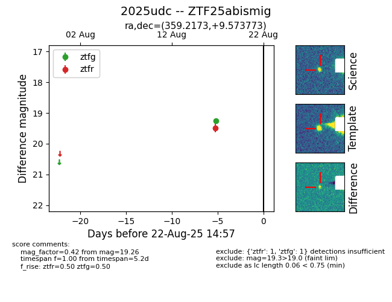

Target 2025udc at 2025-08-21 09:29, see:
FINK: fink-portal.org/ZTF25abismig
Lasair: lasair-ztf.lsst.ac.uk/objects/ZTF25abismig
ALeRCE: alerce.online/object/ZTF25abismig
TNS: wis-tns.org/object/2025udc
YSE: ziggy.ucolick.org/yse/transient_detail/2025udc
alt names
ZTF25abismig (ztf,alerce)
2025udc (tns,yse)
coordinates:
equatorial (ra, dec) = (359.2173,+9.57377)
galactic (l, b) = (101.2500,-50.98629)
photometry
last ztfg=19.26, ztfr=19.49
1 ztfg, 1 ztfr detections
